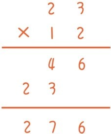
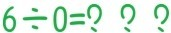
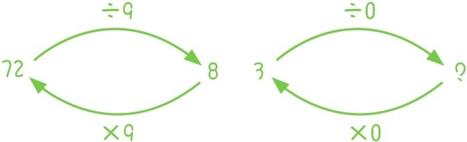
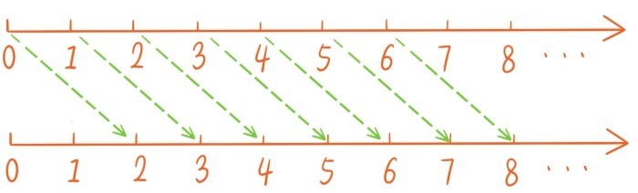
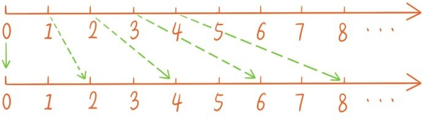
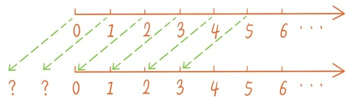

自然数有加减乘除4种基本运算，而这4种运算中，加法是最基本的，也是在现实中被最广泛使用的。和自然数一样，加法也是一种抽象化的概念。在装有3个球的筐中放入6个球就变成9个球，这一类经验中就可以抽象出等式3+6=9。
减法可以看成是加法的逆过程，如果在已经变成9个球的筐中拿出之前放入的6个球，就剩下3个球，回到了最初的状态，仿佛时光倒流。这个过程抽象出来就是9-6=3。
加法是可以随便做的，只要筐足够大，我们可以想往里面放多少球就可以放多少。但是减法就不能随便做了，9-10该等于多少呢？一个只有9个球的筐中，无论如何是取不出10个球呀，所以我们要问这样一个问题：
问题6：9-10有意义吗，该等于多少？
在后面我们还会重新回到这个话题中，现在我们要跳过这个话题，先讲乘法。乘法其实是用加法定义的，比如5个7相加就是
7+7+7+7+7=7×5=35。
从这个意义上讲，乘法无非就是一种特殊的相加方法。之所以要从加法中提炼出乘法，最初是为了计算便利，因为这种特殊的相加方法在计数中是经常被使用到的。比如十进制计数方法中30就表示3个10相加，500表示5个100相加。现实生活中涉及乘法的场景也非常多。
给你6个篮子，其中每个篮子中有7个苹果，请你把这些篮子中的苹果全部倒到一个空筐中。这时筐中就会有
7+7+7+7+7+7=7×6=42
42个苹果。有了7×6=42这种经验，下次在食杂店买6瓶果汁，每瓶果汁的价格是7元时，就可以直接根据之前的7×6=42得出需要付的钱是42元。
7×6=42是九九乘法表的内容，在九九乘法表的基础上，可以直接用竖式计算任何两位数的乘法，这时乘法的便捷性更加凸显了。比如直接算12个23相加的和，远不如下面的乘法竖式计算便捷。

虽然绝大部分小学生对竖式计算已经非常熟悉了，但是还是难免会有小学生会问这样的问题：
问题7：竖式计算背后的原理是什么？
我们之后讲运算定律的时候会再提及这个话题，我们先来看看除法，除法可以看成是乘法的逆过程。如果将上面筐中的42个苹果平均分到6个篮子中，那每个篮子中就有42÷6=7个苹果，又回到了原先的状态，仿佛时光倒流。
除法的意义就是平均分，除以10就是平均分成10份，除以3就是平均分成3份。那如果是除以0呢？你想象一下，6个苹果平均分成0份，该怎么分？似乎没法分。

所以小学老师往往会着重提醒小学生：0绝不可以用来做除数。但是，仍然有不少小学生会疑问：
问题8：0为什么不可以用来做除数？用0做除数会出现什么问题？
回答这个问题需要注意一个要点：除法是乘法的逆运算。72÷9=8，8×9=72。

但是3除以0不管等于什么数，这个数再乘以0是无法还原为3的，因为任何数乘以0都等于0。
从数轴的角度看加法乘法运算也非常有启发性。把所有自然数都加2，这时，0变成2，2变成4，4变成6……这相当于把整条数轴向右平移2。

如果把所有自然数都乘以2，那么0保持不变，2变成4，4变成8……这相当于保持原点不动，把整条数轴均匀地伸长2倍。

数的运算可以对应着几何（直线，平面）的（平移，伸缩）变换，这是整本书的基调。
既然所有自然数都加2相当于把整条数轴向右平移2，那么所有数减2呢？这时2变成0，3变成1，4变成2……这相当于把整条数轴向左平移2。但是整条数轴向左平移2之后，0和1移到了什么位置？似乎要移到原点的左边，对应的算术问题是1-2该等于多少，0-2该等于多少。我们将在本章第八节统一回答这些问题。

到目前为止，加减乘除4种运算都是对两个数做运算。实际上，对于加法运算，我们可以让3个数，4个数，甚至更多的数相加，比如我们可以让下面这4个数相加
5+7+3+2
但是，这种写法本身是有问题的，因为有好几种相加的方法
(5+7)+(3+2)，[5+(7+3)]+2，5+[7+(3+2)]
如果打乱数的顺序就有更多的相加方法
(5+2)+(3+7)，(7+2)+(3+5)，[3+(7+2)]+5，2+[(7+3)+5]
大家可能会认为，这种写法没问题，因为不管怎么相加，只要每个数都加进来，最终的结果都是一样的。但好奇心强的学生可能就会问：
问题9：为什么多个数用不同的相加方式得到的结果总是一样的？
对于乘法运算，也可以让多个数相乘，也可以问：
问题10：为什么多个数用不同的相乘方式得到的结果总是一样的？
这两个问题涉及接下来要讲的运算定律。当然读者也可以现在就尝试回答。
提问时间
1.3.1 数轴的一个平移变换，把5变换为8，那么它会把1变换为哪个数，又会把哪个数变换为12？
1.3.2 数轴的一个保持原点不动的均匀伸长变换，把4变换为12，那么它会把3变换为哪个数，又会把哪个数变换为6？